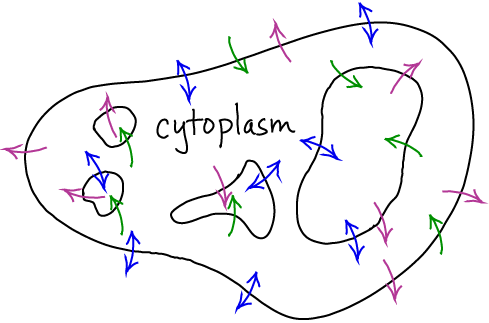

$
\newcommand{\conc}[1]{[\mathrm{#1}]}
\newcommand{\kcat}{k_{\mathrm{cat}}}
\newcommand{\kmmon}{\kon^{\mathrm{ES}}}
\newcommand{\kmmoff}{\koff^{\mathrm{ES}}}
\newcommand{\koff}{k_{\mathrm{off}}}
\newcommand{\kon}{k_{\mathrm{on}}}
\newcommand{\ss}{\mathrm{SS}}
$
Transport in the Cell

Basics
- Transport refers to the cell transporting molecules and ions across
membranes - cellular or organelle membranes.
- Transport is critical to the cell, as it must obtain nutrients, sort molecules,
and export waste.
- Transport can be active or passive.
- Passive transport occurs when molecules flow from a region of high
to low concentration. Such flow requires no free energy, but the cell
may use free energy to regulate the flow, by turning it on or off as needed.
- Example: The action potential in a neuron is gated passive transport.
- See the discussion of ion concentration gradients to learn the basics of electrostatic influences in passive transport.
- Active transport uses free energy to pump a molecule against its
concentration gradient (i.e., from low to high concentration). This can
occur by two generic mechanisms depending on the type of free energy
expended to do the pumping:
- ATP-driven transport, or
- Transport driven by the gradient of another molecule or ion.